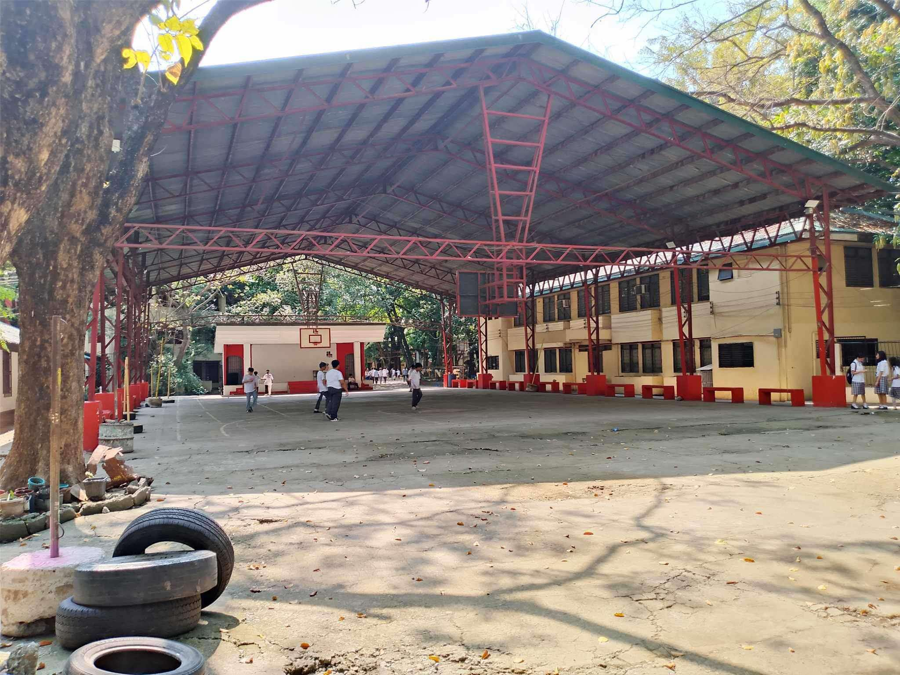

Taguig National High School History
Established on January 8, 1980, it's called Fort Bonifacio College Annex and changed the name into Taguig Municipal High School by memorandum of agreement in July 1979. The school expanded its area of operation by opening an annex at Ususan, Taguig in 1984.
The officer-in-charge, Mrs. Isabelita L. Montesa together with the concerned people worked for transferring the school near Arca South (former F.T.I Terminal) complex to accommodate the large number of enrollees.
After the 1986 People Power Revolution, This way for the acquisition of the present location of the school, the former Institution of Rehabilitation for Man (IRM) at New Lower Bicutan. The land is 3,300 square meters with eighteen (18) building housing 79 classrooms, 3 laboratory rooms, 2- school canteens, an Audio Visual Room and 8 Faculty rooms. The school ground is landscaped with trees, vegetables and ornamental plants. A covered court accommodates students having their P.E. activities.
Students
Most of the students enrolled in this school is 50% Roman Catholic, 40% Muslim and the 10% goes to others religions such as Iglesia ni Cristo, Born Again and Ang Dating Daan.

Most of student use Filipino language based on Tagalog as a way to speak in each other. The English language used during English class or in English speaking Zone. The Muslim students use Arabic language during there Madrasa classes.
The rest of the student speaks other languages such as Bisaya, Japanese, Korean, Spanish, and Thai. As of now, the school administration passed a memorandum that French and Portuguese will be offered as voluntarily and optional language (started in 2012).